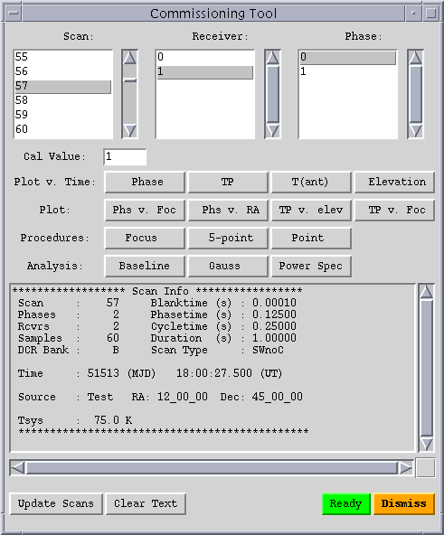
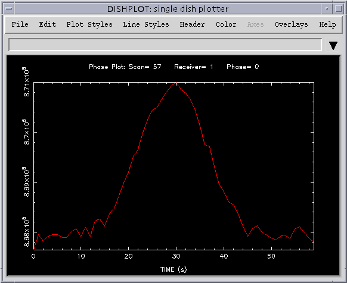
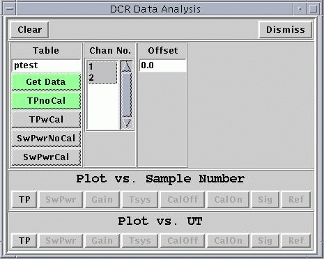
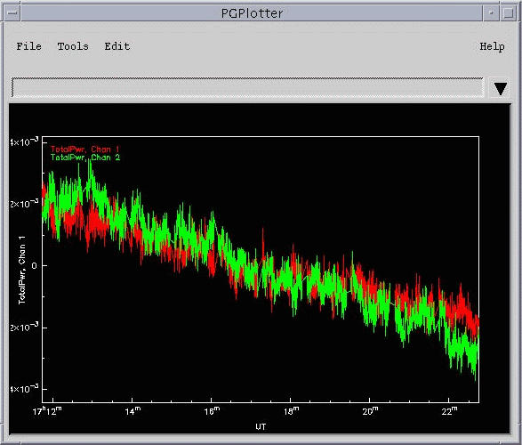
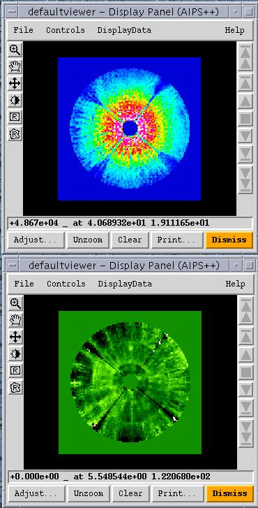
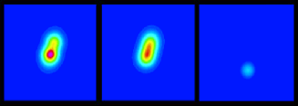

|
|
Table of
Contents:
AIPS++
and
the Green
Bank
Telescope
Glish as a
Scripting
Language
Project
News
Summary
Bug
Reports,
Enhance-
ment
Requests,
and
Questions
AIPS++
Under
Linux
Use of
AIPS++
Advanced Imaging Algorithms
What's
New
|
AIPS++ and the Green Bank Telescope
Jim Braatz - NRAO, Green Bank
The final stage of construction on the GBT entails setting the surface
panels, and as of late January 2000 about 75% were in place.
It is anticipated that NRAO will accept the telescope in the Summer of 2000.
After acceptance, there will be a testing and commissioning phase which will
last through about the end of the year. As the GBT antenna is taking form,
so is the software associated with the operation of the telescope.
AIPS++ is being used widely in the project for the
development of engineering
analysis tools, the observer's interface, and commissioning tools. In
addition, astronomers will do their analysis work using DISH, an
AIPS++
tool for single-dish data reduction (see the
February 1999 article by Bob
Garwood.)
The electronics systems for the telescope have been undergoing
testing in a "mock-up" which includes the receivers, LO systems,
analog filters, and the backends. In December 1999, the monitor and control
software and the observer's interface were incorporated into these tests for
the first time. The tests had the look and feel of a real observing
experience with the GBT. Cross scans through a series of radio sources
were simulated with the Digital Continuum Receiver (DCR) being used
as the backend. In January 2000, similar integrated-system testing
was done using the spectral processor as the backend. These procedures
are ongoing and continue to be useful in identifying how the software can
be optimized.
During the tests, the data were filled into a Measurement Set using a new
on-line filler and then custom AIPS++ tools were used to
conduct the analysis.
The DCR data, for example, were analyzed using the commissioning tool, which is
the AIPS++ software to be used for measuring system
performance and analyzing
continuum data during the GBT's commissioning phase. Specifically,
the commissioning tool will calculate system and antenna
temperatures, pointing offsets, focus parameters, tracking stability, and
tipping curves. The software continues in a development phase as testing
points to procedures which will be required during the actual
commissioning. The tool uses a custom GUI built in Glish/Tk,
though all of the functionality is available from the command line interface
as well. The infrastructure of DISH is built into the commissioning tool,
so many of the techniques translate readily between the two tools. Figure 1
shows the Commissioning Tool GUI and Figure 2 shows some results of a simulated cross scan
plotted on the DISH plotter.

Figure 1: Commissioning Tool GUI

Figure 2: Simulated Cross Scan Plotted on the DISH Plotter
GBT engineers have been building custom Glish tools for testing of
individual electronics components, as well. The ease with which
Glish/Tk GUIs can be created and the ability to manipulate data quickly and
easily are a great asset to the engineers working these tests. The scope
of the applications ranges from checking the noise characteristics of the
receivers to tracing the power pulled by the motors as the antenna is moved.
Figure 3 shows an example of one of the DCR engineering tools; Figure 4, the total
power seen by two different channels is plotted against time.

Figure 3: Example of a DCR Engineering Tool

Figure 4: Total Power seen by Two Different Channels vs. Time
The accuracy of the GBT surface will ultimately rely on the metrology
system, but initially the shape of the surface will be measured and adjusted
using more traditional holography techniques. The holographic measurements
have an expected accuracy of less than 0.1 mm RMS. Tests of the holography
receiver and
backend were completed this past summer using the 140-ft telescope, and the
data have been ingested into AIPS++.
Existing UNIPOPS scripts have been
converted into Glish, and now the full suite of AIPS++
analysis techniques and
data display programs are available. A feature of the AIPS++
viewer which
has been particularly useful in this work is its deft handling of complex
arrays. Figure 5 shows a set of data taken in 1986 with the 140-ft
telescope and displayed with the AIPS++ viewer.
The top frame shows the
illumination pattern on the dish seen by the feed, and the bottom frame shows
the surface deviation from parabolic. A reference panel about 1 mm in
thickness was placed on the dish and can be seen at 12 o'clock, halfway
between the center and edge.

Figure 5:
Top: Illumination Pattern on the Dish as seen by the Feed
Bottom: Surface Deviation from Parabolic
Times are exciting in Green Bank, and the AIPS++ project
looks to play a
vital role in the success of the GBT. The GBT-specific work described in this
article can be credited primarily to Roger Norrod, Joe McMullin, Bob Garwood,
Ron Maddalena, and Dana Balser.
|
Table of
Contents:
AIPS++
and
the Green
Bank
Telescope
Glish as a
Scripting
Language
Project
News
Summary
Bug
Reports,
Enhance-
ment
Requests,
and
Questions
AIPS++
Under
Linux
Use of
AIPS++
Advanced Imaging Algorithms
What's
New
|
Glish as a Scripting Language
Darrell Schiebel - NRAO, Charlottesville
At the recent ADASS IX Conference, a major
theme was combining scripting with compiled languages to arrive at flexible
data processing systems. This was of particular interest to those involved
with
AIPS++
because it confirms that the general approach we adopted in 1994 was the right one. This and future articles
discuss why this approach is fruitful along with comparisons of scripting languages
currently in use.
The three key reasons why this development path was chosen for
AIPS++ is because it
allows:
- users to develop their own applications;
- rapid prototyping by both developers and users; and
- the language and the project to develop together.
One of the primary goals of AIPS++ is to allow users
to develop their own applications. This goal is not easy to fulfill. There will
always be users who can make their applications work even under the most trying of
circumstances, but a large toolkit can elevate the level of interaction so that users
can manipulate components which are conceptually closer to the types of objects which
they understand. Too many systems force users to understand the low-level details of the
system. This has ramifications at many levels. At the most basic level,
the user would like an interactive way to see function options rather than having to know
the parameters (and perhaps global variables!) which a function uses. At a higher level,
the user would like to interact with images rather than having to know details about how
the image is stored. The availability of a scripting language is the gateway, since it
allows a user to write scripts which utilize major components without requiring that the
user understand the low-level details of these components. To be sure, the user must
understand the component, but for it to be beneficial, the level of the interaction must be
close to the level with which the user is comfortable.
The second goal is related to the first; having a scripting language that allows users
to interact with components, also achieves the bonus of having a way for developers to
prototype applications. The key is to have a mechanism to migrate prototypes, or
portions of prototypes, to compiled code as the application matures. This is the best of
both worlds; it allows for a quick start while still permitting an application to mature.
A final goal is necessary for all systems which combine scripting languages with compiled
code. There must be some way to integrate seamlessly compiled modules into the scripting
language as they are developed. All of these goals point toward making the system more
flexible by giving users the ability to build their own systems by connecting and
manipulating components. So while these are specific goals which led
AIPS++ to adopt
Glish as its scripting language,
increasing flexibility is the reason AIPS++ and other projects
have tended toward scripting languages.
At the ADASS meeting, three scripting languages were discussed:
TCL/Tk,
Python, and Glish.
Most of the discussion was about Python, followed by TCL/Tk, and lastly Glish.
Java was also discussed, but not received with as much enthusiasm as
Python and TCL/Tk. A key criterion for adoption seemed to be an existing
large user base. It seemed to make little difference whether or not the users were scientifically oriented.
Certainly this bias is understandable. Once past the initial hurdles, it
seems like both developers and users are happy with the script-based system. In some
cases, it unifies libraries that lacked a uniform interface. In other cases, it just
provides users with an interactive layer. In all cases, it seems that the new flexibility
allows users to accomplish things that wouldn't be possible without the scripting language.
The next issue in this series on will discuss how these languages are extended and how they
have been used.
|
Table of
Contents:
AIPS++
and
the Green
Bank
Telescope
Glish as a
Scripting
Language
Project
News
Summary
Bug
Reports,
Enhance-
ment
Requests,
and
Questions
AIPS++
Under
Linux
Use of
AIPS++
Advanced Imaging Algorithms
What's
New
|
Project News Summary
Tim Cornwell - NRAO, Socorro
Since the last newsletter, we made the first public release of AIPS++,
a cause of great satisfaction (and relief!) to those inside the
Project. The official release date was October 4, and the release was
made at the 1999 ADASS in Kona, Hawaii. The release is source code and
binary executables and is thus available only via CD-ROM. The systems
supported are Linux and Solaris, and the bulk of the interest seems to
be in Linux. We've also received a large number of requests from
non-astronomical institutions, and from private individuals. The
majority of the latter request either Linux or Windows NT (for which a
port is not yet available). We have now exhausted the initial order of
1200 CD-ROMS (400 for each architecture supported), and are in the
process of making new copies.
Now that the first release is out, our goal is to settle down to a six
month release cycle, with patches to the existing release issued every
month or so. The development plan for the next release (due April
2000) is available in AIPS++ Note 226,
along with a description of the release process.
We have also embarked upon an outreach campaign timed to coincide with
the release. At the AOC in Socorro, we held a series of 6 lectures
entitled An Introduction to AIPS++.
These were demonstrations of
the use of AIPS++ in various contexts, drawing upon the document
Getting Started in AIPS++, and the
AIPS++ Cookbook.
Attendance was good, 20-30 each day. Following that, Tim Cornwell and Athol
Kemball
made a tour of various European radio observatories to give talks and
demonstrations. Overall, the reaction has been encouragingly positive.
The first reaction is that AIPS++
is apparently powerful but also hard
to learn. The tool-based approach is generally well-received, and the
graphical user interfaces make a favorable first impression. The
second reaction is that AIPS++
has many more uses than traditional
reduction packages (something that we have deliberately designed, of
course). The third major point that we learnt is that the pressure for
a developer's release is higher than we had thought. With this last
point in mind, we are considering the possibility of a developer's
pre-release to be made in the next 6 months or so, targeted just for
Linux platforms.
We plan to continue this outreach program with similar tutorials at
other consortium sites, and other observatories, and with
presentations at conferences such as the AAS in Atlanta in January
2000.
|
Table of
Contents:
AIPS++
and
the Green
Bank
Telescope
Glish as a
Scripting
Language
Project
News
Summary
Bug
Reports,
Enhance-
ment
Requests,
and
Questions
AIPS++
Under
Linux
Use of
AIPS++
Advanced Imaging Algorithms
What's
New
|
Bug Reports, Enhancement Requests,
and Questions
Tim Cornwell - NRAO, Socorro
Now that AIPS++ is released, we expect
to start receiving requests concerning the package. If the package is to
grow and improve, active user participation is vital. For the moment, the
best way to be involved is via bug reporting, submitting enhancement requests,
and asking questions. Please don't be shy in sending these in. To submit any of these,
type the following inside AIPS++:
bug() # for bug reports;
bug() # select the Enhancement button an enhancement request; and
ask() # for questions
A web interface is also available at:
http://aips2.nrao.edu/docs/contactus/reportabug.html
We have a standardized way of dealing with requests using the Rational
ClearDDTS package. When you submit a bug
report, an enhancement request, or a question, a message is sent to
ClearDDTS and a report, known as a
defect, is initiated. Your message will be acknowledged via email
and a defect number assigned. To determine the status of a given
defect, you may use the web interface at
http://aips2.nrao.edu/docs/contactus/trackabug.html
Your initial submission then goes to a local center for disposition. The
local center can be chosen using the aipsrc variable
system.aipscenter and by putting one of the following in your
.aipsrc file:
system.aipscenter: namerica # For North America
system.aipscenter: europe # For Europe
system.aipscenter: oz # For Australia
The default is namerica. For
namerica, someone at NRAO/Socorro
handles your request, for europe,
someone at NFRA/Dwingeloo, and for oz,
someone at ATNF/Epping. These people can provide immediate help for
configuration problems. If a defect cannot be handled locally, it is
forwarded to the aips2help queue, and assigned to an
AIPS++ project member for processing.
You can correspond with that person over the report. The easiest way to do
this is just to reply to the messages sent from
ClearDDTS. This ensures that a copy of all messages is maintained
|
Table of
Contents:
AIPS++
and
the Green
Bank
Telescope
Glish as a
Scripting
Language
Project
News
Summary
Bug
Reports,
Enhance-
ment
Requests,
and
Questions
AIPS++
Under
Linux
Use of
AIPS++
Advanced Imaging Algorithms
What's
New
|
AIPS++ Under Linux
Tim Cornwell - NRAO, Socorro
The Linux operating system on Intel-based PCs has become one of the most
popular AIPS++ development platforms.
The majority of the NRAO AIPS++ developers
now use Linux, with a minority using either Solaris/Sparc or SGI/IRIX.
For this reason one of the main platforms that we targeted for the first
release was Linux: Red Hat 5.1, 5.2, and SuSE 6.0; and Red Hat 6.0, 6.1,
and SuSE 6.2.
The CD-ROMs for these distributions are intended to contain all that is
needed to run AIPS++. Thus, if you make
a standard installation of Linux for these distributions,
AIPS++
should easily install and be ready to run. The
necessary shared libraries are included on the
AIPS++ CD-ROM. One possible current
exception is the lesstif library,
as discussed later in this article.
In the future, we plan to closely track new releases of Linux distributions,
and minimize the number of versions that we support. We are also considering
a developer's pre-release that is targeted purely for Linux. Expressions of
interest in this would be helpful in setting priorities.
Problems with running some Linux versions
Some users have reported that on their system the Red Hat 6.0 and SuSE 6.2
version of AIPS++ cannot be run either
from the CD-ROM or from disk. The reason is that this version was linked
against a shared lesstif library,
libXm.so. Hence
AIPS++ will not run from the CD-ROM or
from disk unless you have installed Motif (a commerically available product) or
lesstif (available under the GPL).
If you do not have Motif or lesstif
installed, the easiest fix is to install the
lesstif library from the following rpms
lesstif-0.85-1.i386.rpm
and
lesstif-devel-0.85-1.i386.rpm.
These rpms are widely available.
A copy is available from our server at aips2.nrao.edu.
To install, type the following while logged in as root:
host> ftp aips2.nrao.edu
host> binary
host> cd pub/misc
host> get lesstif-0.85-1.i386.rpm
host> quit
host> rpm -i lesstif-0.85-1.i386.rpm
AIPS++ should then run correctly.
You should not have to reinstall AIPS++
if you have already done so.
|
Table of
Contents:
AIPS++
and
the Green
Bank
Telescope
Glish as a
Scripting
Language
Project
News
Summary
Bug
Reports,
Enhance-
ment
Requests,
and
Questions
AIPS++
Under
Linux
Use of
AIPS++
Advanced Imaging Algorithms
What's
New
|
Use of AIPS++ Advanced Imaging
Algorithms
Bob Hjellming - NRAO, Socorro
A special area of aperture synthesis imaging, that was explored in detail by
Dan Briggs in his 1996 Ph.D. thesis, was the use of special algorithms to
show the structure of ``moderately" resolved radio sources. One that was
very useful for this purpose was the Non-Negative Least Squares algorithm.
This algorithm has been implemented as one of the many available for aperture
synthesis imaging in AIPS++. I have
recently used these capabilities to make the best possible images from
unique data for the 4th microquasar in our Galaxy, V4641 Sgr.
V4641 Sgr is an unusual X-ray transient that had extremely brief X-ray,
optical, and radio outbursts September 15-16, 1999. When first observed
with the VLA, only about twelve hours after the X-ray event that produced
jet ejection, a 0.42 Jy source was obviously resolved in the North-South
direction. Unfortunately, because the declination of this source is -25
degrees, the direction of elongation for the jets was only a few degrees
from the normal elongation of the synthesized beam. Simple analysis of the
amplitude distribution showed that the main structure should have a size
scale of 0.25" at a position angle of 162 degrees. Normal imaging and
deconvolution with the CLEAN algorithm produced a symmetric triple structure,
with +/- 0.25" components at exactly the beam-related separation where
CLEAN can introduce spurious structure. In addition, seven radio telescopes
made multi-frequency radio observations during the first 24 hours of the radio
event, and the VLA was able to follow it down to a level just above the
noise at 120 mJy three weeks later; the fitting of models to the
light curve data indicated that this was a highly relativistic, ~0.9c,
superluminal (1.5c) jet source, so one would have expected the radio
emission to be dominated by one side.
For normal radio sources, more data clarifies the situation. However, the
radio event in V4641 was so fast that when the next imaging run was made
with the VLA 1.9 days later, there was only a weak remnant of about 11 mJy.
Most of the 0.42 Jy structure seen in the images for the two eight minute
scans at 4.9 GHz on September 16 was gone.
Over the Christmas 1999 holiday week and the first week of 2000 we used
AIPS++ NNLS imaging on the irreplaceable
September 16 event data. The first results were very promising, and by the
time I went to the Atlanta AAS meeting to present the paper on this object,
we had images that matched everything we knew about the event. The initial
structure was dominated by one-sided structure, 0.25" in size - and we could
see changes in the central regions of the jet in the images made from data
only 30 minutes apart.

The images of V4641 Sgr shown above are 1" in size. The two 4.9 GHz images
at the left were made with the AIPS++
NNLS function in the imager tool using VLA data taken
September 16.027 and 16.048 UT. In the 30 minutes between those two images
the total flux dropped from 0.42 to 0.40 Jy and the peak structure spread
along the direction of motion of the jet. The third image at the right shows
the result of an image made with CLEAN in the
imager tool, using September
17.94 UT data at 14.9 GHz - for which there was fast position switching
between V4641 Sgr and a calibrator 22' away. This radio image shows the
location of the weak decaying radio source that was observed at this
position until it was not detectable after 1999 October 7. This image
sequence shows that the September 16 radio emission was one-sided jet
ejection at a position angle of 162 degrees.
Without any complicated analysis, these images show that the initial jet
ejection was highly relativistic and one-sided with a size scale of 0.25"
attained about 12 hours after the associated X-ray events. This is because,
while V4641 Sgr is a superluminal jet source like GRS 1915+105, GRO J1655-40,
and XTE J1748-288, unlike these sources which are 12, 3, and 8 kpc away,
V4641 Sgr is very close - only 0.5 kpc away.
It is very gratifying to be able to go beyond the testing of capabilities
that have been available in other data processing systems to using some of
the more advanced algorithms which are easily developed in
AIPS++.
|
Table of
Contents:
AIPS++
and
the Green
Bank
Telescope
Glish as a
Scripting
Language
Project
News
Summary
Bug
Reports,
Enhance-
ment
Requests,
and
Questions
AIPS++
Under
Linux
Use of
AIPS++
Advanced Imaging Algorithms
What's
New
|
What's New: June - December 1999
Athol Kemball - NRAO, Socorro
A primary focus has been identifying and correcting defects in preparation for the
public release of AIPS++.
The stability of the system was been improved during this process.
An additional effort has been undertaken to standardize the appearance of
GUI's so that they meet the newly established project GUI guidelines.
The project web pages and documentation have continued to be improved in layout,
content and through the addition of new pages and references. The
ClearDDTS defect-tracking system has been fully integrated into the
web documentation. A first edition of a cookbook for scientific users has been
produced, covering a range of data reduction capabilities in the package.
The Display Library and the Viewer application have received extensive enhancements
in several areas, including display event handling (eg. motion or position),
coordinate support, panning and zooming, RGB/HSV development and extension of
the capabilities of the Postscript canvas.
In imaging and deconvolution applications, new algorithms are now supported
including MEM in imager, multi-scale multi-field deconvolution, and wide-field or
multi-field Hogbom CLEAN. Improvements have been made in the computational efficiency
of several algorithms, and in deconvolution progress displays. New test functions have
been added to verify that correctness of the algorithms.
The simpleimage application has been upgraded
and now can be launched from the tool manager. The wide-field facet calculation
algorithm has been improved. An initial version of single-dish data gridding has been
added, along with preliminary support for holography and "on-the-fly" (OTF) data types.
The tool manager has received a large number of refinements and upgrades to improve
window handling, expand the capabilities and to support new GUI data entry widgets.
The library of standard GUI widgets has been improved and extended.
A number of changes have been made to the Image
tool. The constructors shapetoimage()
and arraytoimage() will now make an appropriate
coordinate system if at all possible, rather than just a simple linear in each
dimension. Computation of flux statistics has been added, as well as new capabilities
in image concatenation, functions to Fourier transform an image, progress displays
in areas such as histogram computation, and initial support for image polarimetry.
The image component fitter now allows both a model and aclip range, and can include
or exclude the pixel ranges to be used in fitting. The function
fit2d() has been renamed to
fitsky().
The Parkes multi-beam software has been revised and improved in a number of areas.
In single-dish development, significant effort has gone into expanding the GBT
data fillers to support a wide variety of back-end data formats and data-associated
parameter (DAP) files. The commissioning tools for the GBT have been extended, as
there have been numerous improvements to the Dish GUI and its functions.
The VLA filler has undergone extensive development during this period, including
new support for auto-correlation data, IF status flags, reading from tape or disk,
and the correction of scaling errors. Data loading from remote tapes is now supported.
A number of new features have also been added to the
RPFITS filler.
The measures software now has new
FITS conversion utilities, and also has
undergone general improvements.
Glish now supports an option to be built with the Boehm-Demers-Wesier
automatic garbage collection system.
The UVFITS capabilities for reading and
writing have been improved for multi-source data files,
GC and
TY sub-tables, and in support for a
broader range of FITS parameters.
The visibility plotter visplot
has had improvements in the area of data selection, robustness, and speed.
Support for calculating the standard flux densities provided by the Perley-Taylor
coefficients has been added to imager as the
function setjy(). The
calibrater tool has a new function to plot
calibration solutions (plotcal), and also
to establish overall flux density scales
(fluxscale). Calibration selection using
FIELD_ID is also now available.
Component model support has been improved through the identification and
correction of some defects, and the addition of new capabilities.
The NFRA software supporting the commissioning of the Telescope Management
System (TMS) has been further developed in a
number of areas.
The simulator has been revised to work from an MS, and it now allows the addition of a
broader range of physically meaningful calibration errors.
In the system area, a new utility, checker,
has been added to verify that the AIPS++
environment is suitable for running specified packages. The memory allocation
infrastructure has been updated, a new combined server has been added to reduce
memory use, and the parallelization code has been updated to track other changes
in the library.
An initial version of an editing tool, flagger, has been added to the system.
The catalog tool has been improved in several areas,
including showing a busy cursor when making lists, recognizing graphics formats
correctly, and handling of the image viewer.
The table system has been improved in several areas. A new function,
addColumns(), has been added and the
support for measures in tables has been extended.
New Mail Exploder for AIPS++
Tim Cornwell - NRAO, Socorro
There is a new moderated mail exploder aips2-user@nrao.edu now up
and running. This is designed for disseminating information about
AIPS++ to our users. To subscribe to this
list, send mail to aips2-user-request@majordomo.cv.nrao.edu with the word
"subscribe" in the body of the message. To unsubscribe, send a message
with the word "unsubscribe".
Kate Weatherall
Last modified: Thu Mar 16 08:36:33 MST 2000
|
|